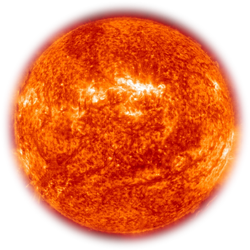
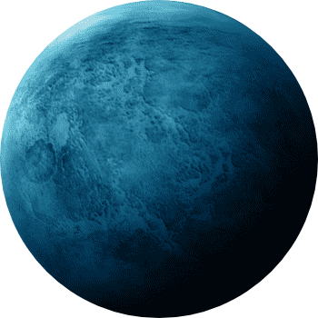
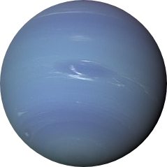

Sistema Solar
| SOL | |
|---|---|
| El Sol es la estrella en torno a la cual se traslada la tierra. La energía de este se explica por los fenómenos de fusión que se dan en él, en los que se forma helio a partir de átomos de hidrógeno. Su formación se remonta a más de cuatro mil quinientos millones de años, a partir de gas y polvo, y se calcula que mantendrá su apariencia actual por otros cuatro mil quinientos millones de años |
 |
| MERCURIO | |
| Mercurio es el planeta inmediatamente más cercano al Sol y es también el más pequeño de todos los 8 grandes planetas; adquirió esta categoría después de la reclasificación de Plutón como un planeta enano. Su distancia al Sol es de 58 millones de kilómetros.Tiene una órbita muy inclinada y muy elíptica. |

|
| VENUS | |
| Es el segundo planeta más próximo al Sol y el más cercano a la Tierra; tanto, que es posible verlo a simple vista desde la superficie terrestre. Esto es también posible debido a que es el cuerpo celeste más brillante del Sistema Solar exceptuando el Sol y la luna.Venus es un planeta rocoso, sin satélites y sin anillos. Se trata de un planeta extremo, caliente, seco y con una presión en la superficie 90 veces superior a la terrestre. |

|
| TIERRA | |
| La Tierra es el hogar de los seres vivos y se formó hace más de 4,500 millones de años. Es el quinto planeta más grande del Sistema Solar y el tercero más cercano al Sol; su distancia promedio a éste es de unos 149’597,890 kilómetros o prácticamente 150 millones de kilómetros. Como otros planetas, presenta una forma esférica y ligeramente achatada en los polos. Su diámetro es apenas un poco más grande que el de Venus. Es un planeta sin anillos pero con un satélite natural, la Luna. |

|
| MARTE | |
| Marte es un planeta similar a la Tierra en términos de medidas,es el cuarto planeta más cercano al Sol, situado justo después de la Tierra.Es el último de los cuatro planetas interiores del sistema solar, conocidos también como planetas terrestres o rocosos. | |
| JIPITER | |
| Es el planeta más grande del Sistema Solar y el quinto en distancia al Sol. Se formó a partir del material que quedó después de la formación del “astro rey”.Es una gigantesca bola de gas achatada sin superficie sólida pero probablemente con un núcleo interno sólido. Algunos científicos se refieren a este planeta como una estrella fallida, que no creció lo suficiente para ser catalogada como tal. |

|
| SATURNO | |
| Es una gran bola de gas con una masa casi 95.1 veces la de la Tierra y un volumen 755 veces mayor, famosa por sus numerosos anillos.Pertenece al grupo de los planetas gaseosos. Es el sexto planeta más alejado del Sol (a unos 1,400 millones de kilómetros) y el segundo planeta situado después del cinturón de asteroides. |

|
| URANO | |
| Urano es el séptimo planeta del Sistema Solar, el tercero en tamaño, y el cuarto más masivo.Urano posee la superficie más uniforme de todos los planetas por su característico color azul-verdoso, producido por la combinación de gases presentes en su atmósfera. Puede ser visto a simple vista en un cielo excepcionalmente oscuro, y puede encontrarse con facilidad con simples binoculares. |  |
| NEPTUNO | |
| Es el planeta más alejado del Sol pues se encuentra a una distancia de éste equivalente a 4,500 millones de kilómetros o 4.5 mil millones de kilómetros. Sin embargo, no es el más frío del sistema planetario. Este puesto lo ocupa Urano.Fue el primer planeta cuya presencia fue predicha antes que descubierta, cuando en 1845 el matemático Joseph Urbain Le Verrier consideró la posición y masa de otro planeta que afectaría el cambio de posición de Urano. |  |